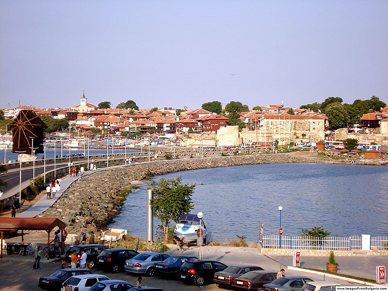

Несебър
 Несебър е град, разположен в Югоизточна България. Той се намира в Община Несебър, Област Бургас, в съседство на север с най-големия български черноморски курорт Слънчев бряг. Градът е административен център на община Несебър и е един от най-древните градове в Европа, възникнал преди повече от 3200 години.
Островът на Несебър — древният град Месeмбрия, наречен през късното средновековие Месембрия и по-късно Несебър, е населен преди хилядолетия, в края на бронзовата ера. Старите траки го наричат "Мелсамбрия", което означава "град на Мелса", легендарният основател на селището. Месамбрия има две удобни пристанища — южно и северно, където и до днес се намират множество останки от древни плавателни съдове.
Културното наследство на Несебър е запазено в пет музейни експозиции. В старата част на града е имало около 42 църкви, от които по-малко от половината са открити от археолозите и консервирани, а действаща в момента е само една. Другите по-запазени са превърнати в картинни галерии. Провлакът, свързващ старата част с новата, е дълъг около 400 метра. По средата на провлака се намира старата мелница на града, която не функционира като такава, а е само туристическа атракция. В началото на квартала, в новата част на Несебър, се намира истинската мелница на града, която сега е вградена в хотел.
Предложения за хотели в Несебър